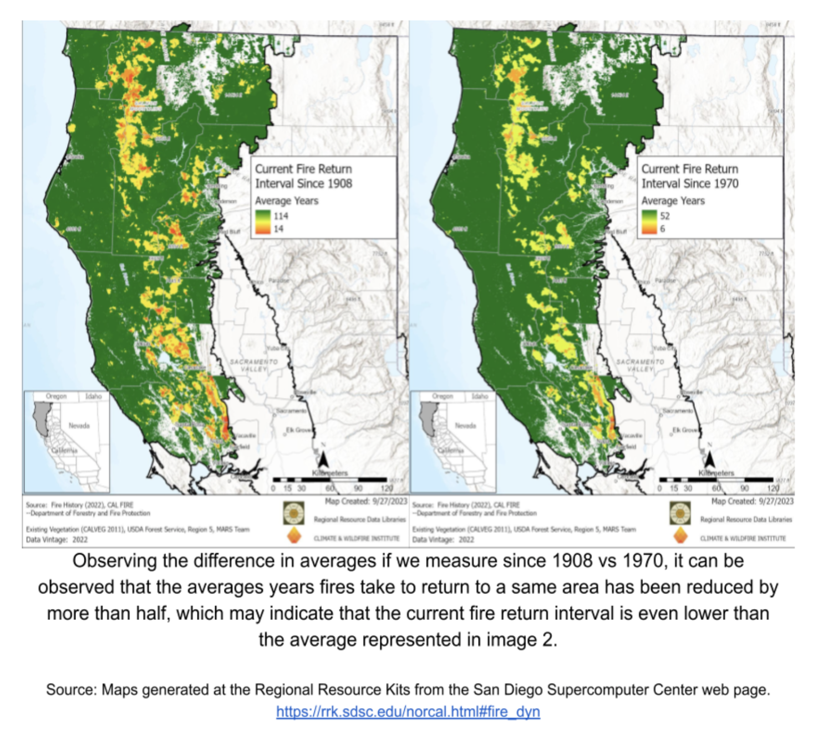

Climate Change and Future Challenges: The Impact on Wildfire Behavior and Forest Management in the Sierra Nevada
The Sierra Nevada has a huge challenge in the form of climate change, which has far-reaching implications for the natural behavior of wildfires and the management of forests. Because of the complexity of the problem, it is necessary to take a multidimensional approach, drawing on knowledge from a variety of sectors and making use of a wide range of resources.
Climate Change and Wildfire Behavior in the Sierra Nevada
The Sierra Nevada is going through significant changes as a result of climate change, which are directly impacting the patterns of wildfires and the severity of those that occur. A combination of factors, including rising temperatures and recurrent droughts, has resulted in the region's woodlands becoming more dry. These elements lead to an increased likelihood of wildfires starting and swiftly spreading over the area.
Consequences of Climate Change
- Increasing temperatures and extended droughts: There has been a large increase in the average temperature of the Sierra Nevada, as well as an increase in the frequency and severity of droughts. The combination of these factors causes the vegetation and forest floors to become drier, which creates circumstances that are perfect for wildfires to start and spread.
- Heightened occurrence of intense meteorological phenomena: There is a correlation between climate change and a rise in the occurrence of severe weather events, such as windstorms. These circumstances have the potential to not only increase the severity of wildfires but also speed up their spread over terrain.
- Exacerbation of wildfire intensity and propagation: Larger, more intense wildfires that are becoming more difficult to contain have been caused by a combination of drier circumstances and an increase in the frequency and severity of severe weather events.
Challenges in Forest Management
Forest management in the Sierra Nevada faces numerous obstacles in adapting to the changing climate and mitigating wildfire risks. Some current obstacles in policy and regulation include:
- Permit challenges: Obtaining permits for regulated burning, a crucial tool in forest management, can be a complex and time-consuming process.
- Reconciling environmental safeguards: There is usually tension between environmental protection measures, such as air quality restrictions, and the need for controlled burns to manage forest health and reduce wildfire risk.
Advancements in Forest Management
- Satellite monitoring: Wildfires are being identified and monitored with the use of cutting-edge satellite technology, which enables faster reaction times and more effective control measures to be implemented.
- Carbon credit schemes: By offering financial incentives for carbon sequestration, these creative projects encourage sustainable forest management methods.
Research and Resources at UC Berkeley
UC Berkeley is at the forefront of research on climate change and its impacts on forest ecosystems, particularly in the Sierra Nevada region.
- Scott Stephens: Professor of Fire Science at UC Berkeley, Stephens leads research on fire ecology and management in the Sierra Nevada.
- Berkeley Lab Wildfire Research: Investigations on the effects of wildfires on water, air, and ecosystems are being conducted by this multidisciplinary research group.
- Sierra Nevada Research Institute: Based at UC Merced, this institution works in conjunction with academics from UC Berkeley on studies of the Sierra Nevada environment.
Databases and Archives
- Cal-Adapt: Using this online resource, users may have access to data and visualization tools pertaining to the climate of California.
- California Fire Science Consortium: With the assistance of academics from UC Berkeley, this group offers a database of fire science research that is pertinent to ecosystems in the state of California.
Conclusion
The Sierra Nevada's forests are facing enormous problems as a result of climate change; yet, there is potential for improving resilience via continuous research and new management strategies. When it comes to the development and implementation of successful policies to maintain these key ecosystems in the face of a changing climate, collaboration between academic institutions such as the University of California, Berkeley, government agencies, and local communities will be essential.